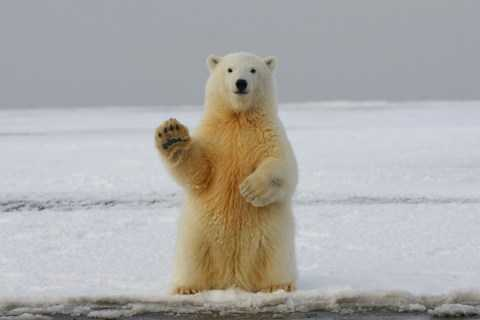
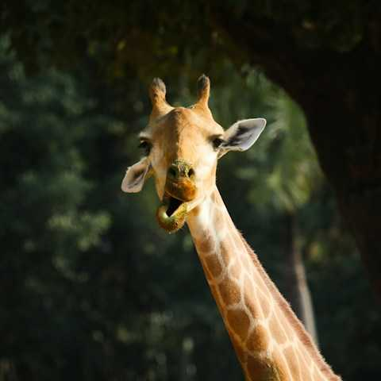
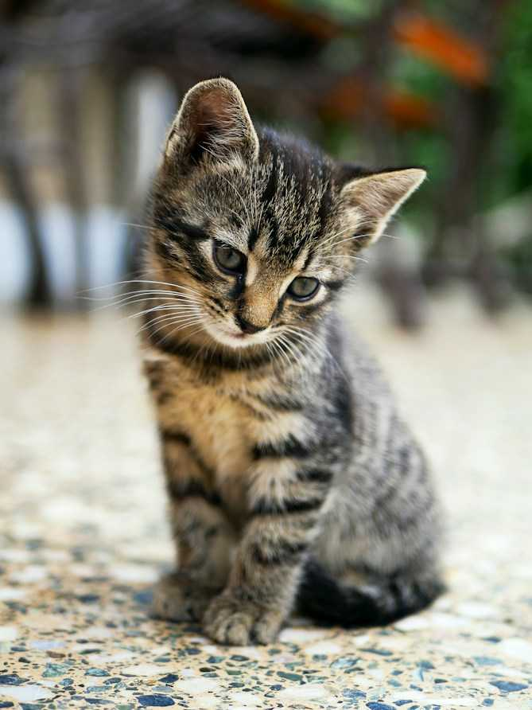
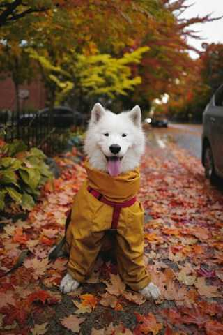
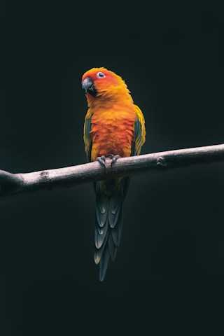

“El reino de los Hongos” (Editorial)
Un libro sobre la cultura de los hongos Psilocibios en la historia del arte y la ciencia, pensado a 3 tintas y una paleta cromática limitada, que sugiere una estética moderna y minimalista que mezcla aires juveniles y poco convencionales con la estructura rígida del editorial científico. Acompañan un afiche informativo y un set de 6 estampillas temáticas.
Este trabajo es un proyecto académico individual realizado para Tipografía II (Cátedra Acosta) de la Universidad Nacional de Lanús, en 2025.